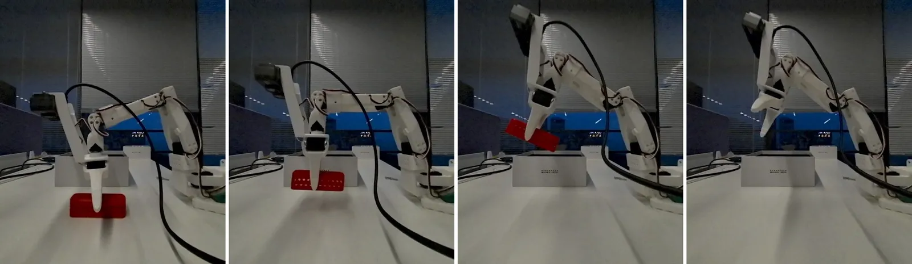

大模型操控 SO101 机械臂
我把 Codex（基于 GPT 的编程智能体）接上一台 SO101 机械臂和两路相机，不让它写网页，而是让它自己看图、规划、下发关节目标，在真机上闭环完成红块入箱和叠纸杯。成功的轨迹再交给 ACT 学习，往“大模型纠偏、小模型执行”的方向走。
- 做什么
- 让大模型智能体直接操控真机械臂，完成桌面抓放
- 我做的
- 搭建常驻控制进程和双相机链路、设计技能树与复盘格式、把智能体的成功轨迹整理成 ACT 训练数据
- 技术栈
- Codex · LeRobot 0.6.1 · ROS 2 · ACT · 双路 RGB
- 任务
- 红块入箱 20 条、叠纸杯 15 条成功记录；叠 T 恤（失败，还在试）
- 关键发现
- 大模型能靠看图完成真实抓放，但慢：红块一次动作只有 17.7 秒，算上看图和思考要 223 秒。所以下一步是把它的成功经验蒸馏给本地小模型。
- 目前进展
- 大模型控制下两项任务都已跑通；ACT 只做到离线拟合，还没有自主上机成功。
给大模型一双眼睛和一只手
大模型不能直接驱动舵机。我搭了一个常驻的控制录制进程，把机械臂包装成三条 JSON 指令：observe 返回腕部和外部两张图、六个关节的实际角度和健康状态；step 接收绝对关节目标、时长和这一步的理由，执行后再返回双图和反馈；finish 结束并保存整条 episode。
两路相机分工明确：腕部相机看夹爪和物体的接触细节，固定的外部相机看离桌高度、障碍物和撤离路径。只用 RGB，不用深度、IMU 或双目测距。
- 眼睛腕部 RGB + 外部 RGB
- 手常驻控制进程：observe / step / finish
- 脑Codex 读图、选关节目标、写理由
任务组织参考 RoboRSI 的技能树：桌面操作 → 摆底座、叠上杯、入箱等复合技能 → 观察、抓取、搬运、放置、撤离等原子技能 → 相机、运动、几何、策略建议等基础接口。每一步动作都标记它属于哪个技能节点，失败时能定位到具体环节。
看一步，走一步
智能体按四种职责推进：Manager 选任务、排修订队列；Planner 读当前画面，确定物体和阶段；Engineer 下发动作，必要时改代码；Reviewer 看执行后的连续图像，判断成功或失败，定位最早出问题的节点。这四种职责由同一个 Codex 会话轮流承担。
- 观察双图 + 关节反馈
- 决策确定这一阶段的关节目标
- 执行分段运动，记录实际轨迹
- 复看对照画面与反馈，修正或进入下一阶段
关节反馈是它判断“动作有没有真的到位”的依据。叠杯第一次抬升时，肩关节目标约 −32.95°，实际只到 −26.42°，差了 6.54°；侧视画面显示杯子没离桌。它据此加大抬升，杯子才真正被提起来。
夹爪也一样：红块抓取时目标开合 16.00%，反馈停在 18.15%。它把保持目标放宽到 17.35%，让舵机不再一直追更小的开合量。这是位置层面的调节，不代表测量了夹持力。
两项任务
红块入箱
沿红块长轴找中点夹取，确认离桌，整块越过箱沿，箱内松爪，高位撤离。难点是对中、越障和撤离时别把箱子带走。


叠纸杯
把一只倒扣的纸杯叠到另外两只上面。比红块难：杯子高、壁薄，低位侧向接近容易把杯子推走；放置时杯口要同时跨在两只杯子上。最终改为从杯身上侧夹持，借外部侧视确认接触和落位。

目前累计红块入箱 20 条、叠纸杯 15 条成功示范。每次尝试都保存当次的任务计划、每一步的决策理由、遥测和双图证据。实验之间由我摆回物体；任务中的每一步运动都由 Codex 调接口下发，不是我遥控。
翻车与经验
早期失败几乎都有一个共同点：局部动作看起来完成了，但物体或路径并不满足任务。夹了红块尾部、抬得不够高撞箱沿、收臂时把箱子带走、接近纸杯时把杯子推走。
每次复盘后，可迁移的规则会写进项目的经验文档，下一轮读取。几条最有用的：
- “对准”不等于“夹住”。杯口在腕部画面居中、俯视投影重叠、夹爪闭到目标开度，都不能证明杯壁在两指之间。必须看物体是否随夹爪离桌。
- 历史成功姿态只是参考。物体被复位后位置会变，直接回放旧关节角会空抓，每次都要按当前画面重新定位。
- 净空按物体最低点算。只看末端坐标会低估碰撞，越障要看整只夹爪和物体底部。
- 相机摆位比数量重要。早期也有两路相机，但关键接触区被同时遮挡，夹爪照样推走杯子。调整外部相机后，侧面接触才看得清。
瓶颈在思考，不在电机
真正动起来的时间很短，大部分时间花在看图、推理和调用工具上。
- 红块 · 动作
- 17.7 s
- 红块 · 总计
- 222.8 s
- 叠杯 · 动作
- 36.0 s
- 叠杯 · 总计
- 782.6 s
叠杯时两条指令之间隔 15.5–58.2 秒，而本地 ACT 推理一次的中位数只要 45 ms。这个差距就是把大模型的经验交给小模型的理由：小模型负责连续执行，大模型只在接触、越障和环境变化时介入。
把经验交给 ACT
智能体每次成功都留下一条完整 episode：双路 RGB、六维关节与夹爪状态、实际下发的动作。我用其中两条叠杯成功轨迹（共 2,303 帧）在 LeRobot 上训练双 RGB 输入的 ACT，一次预测未来 16 步动作。
整理数据时发现一个坑：有一条轨迹中途因舵机温度暂停了约 185 秒。按帧号连续取 16 步，会把暂停前的“保持”和恢复后的“释放”拼成一个现实里不存在的跳变。我按控制段和时间间隔截断动作块，越界的步用 ACT 自带的 action_is_pad 屏蔽，不计入损失。
- 保持当前关节（基线）
- 4.05°
- ACT 1,500 步
- 3.97°
- ACT 2,000 步
- 7.84°
结论很诚实：两条轨迹不够，1,500 步检查点在肘关节上只和“不动”基线持平，多数关节还不如基线。所以 ACT 现在只作为动作建议接入，由 Codex 看图后决定是否采用。
局限与下一步
- 太慢。一次红块任务近 4 分钟，叠杯 13 分钟。下一步把稳定的分段流程固化成本地函数，大模型只在关键节点判断。
- 小模型还没学会。先让 ACT 提动作、Codex 纠偏，把纠偏后的轨迹继续变成训练数据，再用独立场景比较成功率。
- 柔性物体不行。叠 T 恤试了 7 次都没成功：夹爪闭合、短抬后布料不随动。需要先制造可夹的布边，或换夹持方式。
- 还要人复位。每次尝试之间由我摆回物体，还谈不上连续自主运行。
- 换一套技能试试。正在用 Google DeepMind 开源的机器人技能包走 real → sim → real：先在 MuJoCo 里按实测几何建模、仿真抓放，再回到真机，对比它和我自己这套流程的效果。